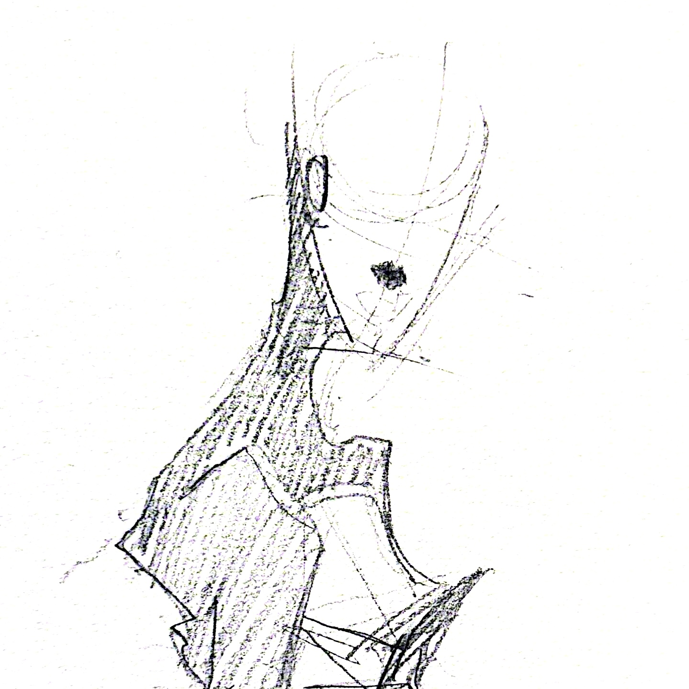

What do you think about sporadic creation? Does your work usually have meaning?

Where do you personally stand in relation to creativity?
What pulls you toward it, keeps you in it, or keeps you at a distance?
And you’re trying to keep doing it forever?